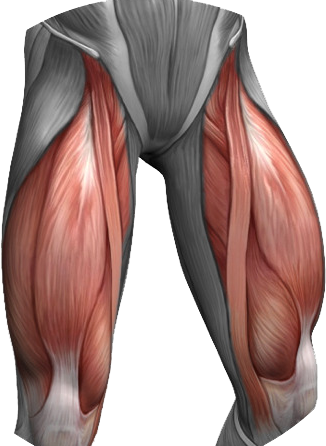
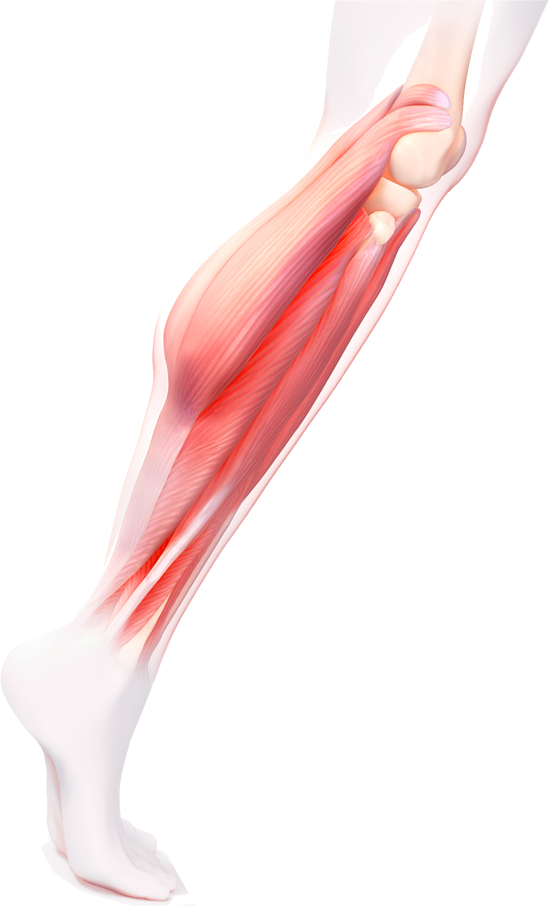
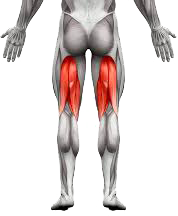
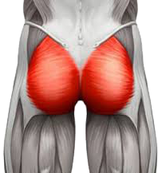

De benen bestaan uit 4 verschillende grote spieren, die je een voor een afzonderlijk kan trainen: Quadriceps, Glutes, Hamstring en Calves.
Quadriceps
Quadriceps betekent 4-hoofdige spier. Deze spier zorgt ervoor dat je de knie kan buigen. De 4 hoofden komen allemaal samen in de knieschijf.
Om de Quadriceps afzonderlijk te trainen kan je oefeningen doen als Lunges, Squats, Step Ups, Leg Extension, Leg Press, Dumbbell Front Squats, ...
Calves
De Calves, ook wel kuitspieren genoemd, liggen achteraan het onderbeen. Hun voornaamste doel is om de enkel te bewegen. De Calves kunnen getraind worden met Seated Calf Raises.
Hamstrings
De Hamstrings liggen aan de achterkant van het bovenbeen. Hun voornaamste doel is het buigen van de knie.
Om de Hamstrings afzonderlijk te trainen kan je oefeningen doen als Leg Curls, Deadlifts, Hip Extensions, ...
Glutes (Gluteus Maximus)
De Glutes zijn de grootste spieren in het menselijk lichaam. Ze bevinden zich ter hoogte van de billen.
Om de Glutes afzonderlijk te trainen kan je oefeningen doen als Deadlifts, Front Squats, Side Lunges, Lunges, Squats, ...